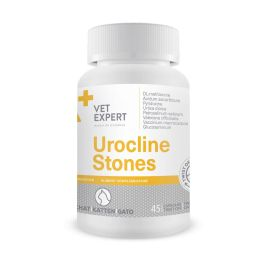

Complementary feed for dogs and cats
Provides essential vitamins and minerals to support gestation, lactation, growth, convalescence, aging, appetite loss, and intense activity (sport, hunting, work). Suitable for supplementing homemade diets.
Oral administration:
- For cats and puppies up to 5 kg: 1 capsule every 2 days
- For dogs: 1 capsule per 10 kg per day
Duration: from 1 week to several months. Open Twist Off capsule by twisting or cutting tip. Administer directly, on tongue, paw, or mixed with food. Adjust dosage and duration based on veterinary recommendation.
Ensure constant access to fresh water. Keep out of reach of children and animals.
Packaging: Jar of 20 or 60 Twist Off capsules
Price: 95 MAD